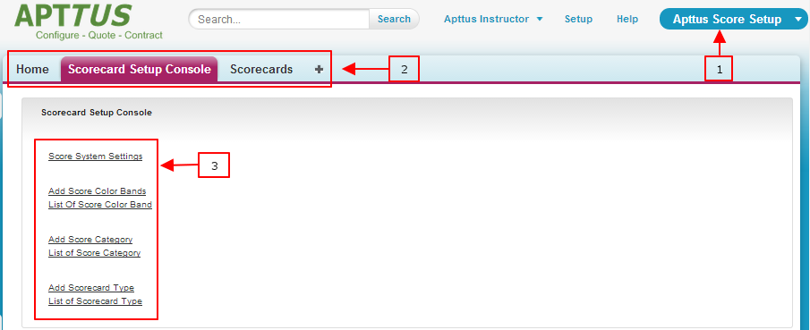

Scorecard Setup Console
Scorecard is a measure used to rate a supplier, company, customer, process, or vision. Scorecard is also used for scoring the Key Performance Indicator (Score Metrics) for a given business.
Scorecard is a module of Supplier Relationship Manager that enables organizations to effectively manage supplier relationships, including vendor on-boarding, agreements, spend, purchase orders, vendor scoring, business reviews, issue tracking, and comprehensive relationship dashboards.
As a Supplier Manager user, you can track all supplier engagement activities including
- Vendor Scoring
- Contract process,
- Supplier Performance,
- Supplier Spend
- Issue Tracking.
- Activities related to suppliers
- Spend Visibility
- Calls, emails, and calendar events.
You can also access pre-configured reports and dashboards.
To evaluate performance, you can define various categories you will use to evaluate the performance. Scorecard provides you the capability and flexibility to define how you wish to measure the metrics.
Use Force.com application menu and select Apttus Score Setup as the application.
Scorecard is comprised of two parts:
- Scorecard settings – Use the Scorecard Setup Console tab to set up your Scorecard.
- Scorecard – Use the Scorecards tab to access the scorecards.
Here is a quick overview of the Scorecard user interface

- Force.com app menu
-
Tabs—Provide an easy way to create, edit, view, find and organize Scorecard
objects and records, or metrics/ratings. The Scorecard Setup Console tab enables you
to do the following:
- Set up and edit Scorecard system properties
- Set up and edit Scorecard Color Bands
- Create, add, edit, and list Scorecard Categories
- Create, add, edit and list Scorecard Type
- Scorecard Quick Access menu—Quickly jump to relevant Scorecard customization features.
In order to set up a complete scorecard, you need to perform the following tasks.
- Set up Scorecard System Settings
- Set up Scorecard Color Band
- Set up Scorecard Category
- Set up Scorecard Types